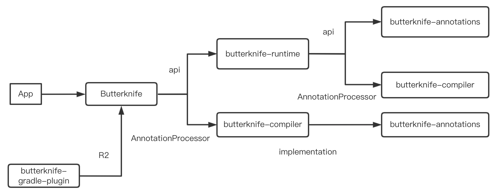

写在最前面
这一篇文章其实是计划之外的，因为一开始没想要深究反射效率的问题。但是如果翻了 ButterKnife 项目文件结构的时候，会看到如下结构：
.
├── build.gradle
├── butterknife
│ ├── build
│ ├── build.gradle
│ ├── butterknife.butterknife.iml
│ ├── gradle.properties
│ ├── proguard-rules.txt
│ └── src
├── butterknife-annotations
│ ├── build
│ ├── build.gradle
│ ├── butterknife-annotations.iml
│ ├── gradle.properties
│ └── src
├── butterknife-compiler
│ ├── build
│ ├── build.gradle
│ ├── butterknife-compiler.iml
│ ├── gradle.properties
│ └── src
├── butterknife-gradle-plugin
│ ├── build.gradle
│ ├── butterknife-gradle-plugin.iml
│ ├── gradle.properties
│ └── src
├── butterknife-reflect
│ ├── README.md
│ ├── build
│ ├── build.gradle
│ ├── butterknife-reflect.iml
│ ├── gradle.properties
│ ├── proguard-rules.txt
│ └── src
├── butterknife-runtime
│ ├── build
│ ├── build.gradle
│ ├── butterknife-runtime.iml
│ ├── gradle.properties
│ └── src
├── gradle
│ ├── gradle-mvn-push.gradle
│ └── wrapper
├── gradle.properties
├── gradlew
├── gradlew.bat
├── local.properties
├── sample
│ ├── app
│ ├── library
│ └── sample.iml
├── settings.gradle
└── website
核心的工程库有这个几个：butterknife，butterknife-annotations，butterknife-compiler，butterknife-gradle-plugin，butterknife-reflect，butterknife-runtime，sample.app，sample.library 这个几个。其中依赖关系如下：

这里面只有 butterknife-runtime 库，没有在引用链中。而其实这个库有相应的 README，简而言之来说就是：
通常的 butterknife 使用编译时注解，生成中间文件，这样有更好的性能。但是 butterknife-runtime 是一个完全运行时的库，通过反射来实现的，性能会差。
那么问题来了，为啥反射的时候性能会差？本篇我们来大致看看。本篇所有的 Java 源码分析都是用的 1.8 的源码。
获取方法
上篇中，我们已经说过反射获取一个 Method 对象是怎样的：
Method getMethod(String name, Class<?>... parameterTypes);
Method getDeclaredMethod(String name, Class<?>... parameterTypes);
我们知道第一个方法是获取 自己 和 父类 所有 public 方法，第二个是获取自己所有方法，那我们就分开来看看。
getMethod
public Method getMethod(String name, Class<?>... parameterTypes)
throws NoSuchMethodException, SecurityException {
//校验权限
checkMemberAccess(Member.PUBLIC, Reflection.getCallerClass(), true);
//获取方法
Method method = getMethod0(name, parameterTypes, true);
if (method == null) {
throw new NoSuchMethodException(getName() + "." + name + argumentTypesToString(parameterTypes));
}
return method;
}
简单粗暴，先校验权限后获取方法。我们直接看获取方法的相关内容：
private Method getMethod0(String name, Class<?>[] parameterTypes, boolean includeStaticMethods) {
MethodArray interfaceCandidates = new MethodArray(2);
Method res = privateGetMethodRecursive(name, parameterTypes, includeStaticMethods, interfaceCandidates);
if (res != null)
return res;
// Not found on class or superclass directly
interfaceCandidates.removeLessSpecifics();
return interfaceCandidates.getFirst(); // may be null
}
分了两步来判断，如果尝试获取method，如果存在就直接返回。如果没有，对接口类型进行查重返回。
看下 privateGetMethodRecursive 方法：
private Method privateGetMethodRecursive(String name,
Class<?>[] parameterTypes,
boolean includeStaticMethods,
MethodArray allInterfaceCandidates) {
Method res;
// Search declared public methods
if ((res = searchMethods(privateGetDeclaredMethods(true),
name,
parameterTypes)) != null) {
if (includeStaticMethods || !Modifier.isStatic(res.getModifiers()))
return res;
}
// Search superclass's methods
if (!isInterface()) {
Class<? super T> c = getSuperclass();
if (c != null) {
if ((res = c.getMethod0(name, parameterTypes, true)) != null) {
return res;
}
}
}
// Search superinterfaces' methods
Class<?>[] interfaces = getInterfaces();
for (Class<?> c : interfaces)
if ((res = c.getMethod0(name, parameterTypes, false)) != null)
allInterfaceCandidates.add(res);
// Not found
return null;
}
分了三种情况：
- 查找自己的 public 方法
- 如果不是接口，同时有父类，查找父类的的方法，递归回到 getMethod0
- 如果是接口，查找接口的方法，并放到候选数组中。
先看第一个
// 获取 declaredPublicMethods，单例模式，懒启动。
private Method[] privateGetDeclaredMethods(boolean publicOnly) {
checkInitted();
Method[] res;
ReflectionData<T> rd = reflectionData();
if (rd != null) {
res = publicOnly ? rd.declaredPublicMethods : rd.declaredMethods;
if (res != null) return res;
}
// No cached value available; request value from VM
res = Reflection.filterMethods(this, getDeclaredMethods0(publicOnly));
if (rd != null) {
if (publicOnly) {
rd.declaredPublicMethods = res;
} else {
rd.declaredMethods = res;
}
}
return res;
}
//校验函数签名是否 完全一直
private static Method searchMethods(Method[] methods,
String name,
Class<?>[] parameterTypes)
{
Method res = null;
String internedName = name.intern();
for (int i = 0; i < methods.length; i++) {
Method m = methods[i];
if (m.getName() == internedName
&& arrayContentsEq(parameterTypes, m.getParameterTypes())
&& (res == null
|| res.getReturnType().isAssignableFrom(m.getReturnType())))
res = m;
}
return (res == null ? res : getReflectionFactory().copyMethod(res));
}
这样自己的 public 方法都已经找到。注意最后返回的是一个 method 的拷贝。这里拷贝最终调用的就是 Method.copy 方法，所有copy出来的 method 和原 method 共用同一个 MethodAccessor。
2，3 流程是类似的。不过如果单单是一个接口的话，会有个去重的操作，猜测大概是 由于子类和父类有相同的签名的函数吧。
接下来说下 getDeclaredMethod：
public Method getDeclaredMethod(String name, Class<?>... parameterTypes)
throws NoSuchMethodException, SecurityException {
checkMemberAccess(Member.DECLARED, Reflection.getCallerClass(), true);
Method method = searchMethods(privateGetDeclaredMethods(false), name, parameterTypes);
if (method == null) {
throw new NoSuchMethodException(getName() + "." + name + argumentTypesToString(parameterTypes));
}
return method;
}
直接调用了 searchMethods，直接什么都不看，就看这个类自己的 method。返回查找结果。
因此 一个Method的获取过程大致是这样的：
getMethod{
checkMemberAccess()
getMethod0{
privateGetMethodRecursive{
// 查找本身
searchMethods(Method.PUBLIC)
// 查找父类
getSuperclass().getMethod0()
// 查找接口
getInterfaces().getMethod0()
}
}
}
调用方法
Method 之前我们说调用方法为 Method#invoke，那我们直接来看看这里的思路：
public Object invoke(Object obj, Object... args)
throws IllegalAccessException, IllegalArgumentException,
InvocationTargetException
{
// accessableObject 的熟悉，setAccessable 时会设置这里的属性，否则要查看其权限。
if (!override) {
if (!Reflection.quickCheckMemberAccess(clazz, modifiers)) {
Class<?> caller = Reflection.getCallerClass();
checkAccess(caller, clazz, obj, modifiers);
}
}
MethodAccessor ma = methodAccessor; // read volatile
// 获取 MethodAccessor，由其来真正进行调用
if (ma == null) {
ma = acquireMethodAccessor();
}
return ma.invoke(obj, args);
}
private MethodAccessor acquireMethodAccessor() {
// First check to see if one has been created yet, and take it
// if so
MethodAccessor tmp = null;
if (root != null) tmp = root.getMethodAccessor();
if (tmp != null) {
methodAccessor = tmp;
} else {
// Otherwise fabricate one and propagate it up to the root
tmp = reflectionFactory.newMethodAccessor(this);
setMethodAccessor(tmp);
}
return tmp;
}
public MethodAccessor newMethodAccessor(Method var1) {
checkInitted();
if (noInflation && !ReflectUtil.isVMAnonymousClass(var1.getDeclaringClass())) {
return (new MethodAccessorGenerator())
.generateMethod(var1.getDeclaringClass(),
var1.getName(),
var1.getParameterTypes(),
var1.getReturnType(),
var1.getExceptionTypes(),
var1.getModifiers());
} else {
NativeMethodAccessorImpl var2 = new NativeMethodAccessorImpl(var1);
DelegatingMethodAccessorImpl var3 = new DelegatingMethodAccessorImpl(var2);
var2.setParent(var3);
return var3;
}
}
这里可以看到，一共有三种 MethodAccessor。MethodAccessorImpl，NativeMethodAccessorImpl，DelegatingMethodAccessorImpl。
采用哪种 MethodAccessor 根据 noInflation 进行判断，noInflation 默认值为 false，只有指定了 sun.reflect.noInflation 属性为 true，才会 采用 MethodAccessorImpl。
所以默认会调用 NativeMethodAccessorImpl。
而在 NativeMethodAccessorImpl 中，invoke 方法调用如下：
public Object invoke(Object var1, Object[] var2) throws IllegalArgumentException, InvocationTargetException {
if (++this.numInvocations > ReflectionFactory.inflationThreshold()
&& !ReflectUtil.isVMAnonymousClass(this.method.getDeclaringClass())) {
MethodAccessorImpl var3 = (MethodAccessorImpl)(new MethodAccessorGenerator())
.generateMethod(this.method.getDeclaringClass(),
this.method.getName(),
this.method.getParameterTypes(),
this.method.getReturnType(),
this.method.getExceptionTypes(),
this.method.getModifiers());
this.parent.setDelegate(var3);
}
return invoke0(this.method, var1, var2);
}
所以当调用次数 大于 ReflectionFactory.inflationThreshold 时会使用 Java 的 MethodAccessorImpl，否则会使用 NativeMethodAccessorImpl。这是由于：
Java 版本的 MethodAccessorImpl 调用效率比 Native 版本要快 20 倍以上，但是 Java 版本加载时要比 Native 多消耗 3-4 倍资源，所以默认会调用 Native 版本，如果调用次数超过 15 次以后，就会选择运行效率更高的 Java 版本。
小结
了解了反射的原理以后，我们来分析一下反射效率低的原因。
Method#invoke 方法会对参数做封装和解封操作
我们可以看到，invoke 方法的参数是 Object[] 类型，也就是说，如果方法参数是简单类型的话，需要在此转化成 Object 类型，例如 long ,在 javac compile 的时候 用了Long.valueOf() 转型，也就大量了生成了Long 的 Object, 同时 传入的参数是Object[]数值,那还需要额外封装object数组。 而在上面 MethodAccessorGenerator#emitInvoke 方法里我们看到，生成的字节码时，会把参数数组拆解开来，把参数恢复到没有被 Object[] 包装前的样子，同时还要对参数做校验，这里就涉及到了解封操作。 因此，在反射调用的时候，因为封装和解封，产生了额外的不必要的内存浪费，当调用次数达到一定量的时候，还会导致 GC。
需要检查方法可见性
通过上面的源码分析，我们会发现，反射时每次调用都必须检查方法的可见性（在 Method.invoke 里）
需要校验参数
反射时也必须检查每个实际参数与形式参数的类型匹配性（在NativeMethodAccessorImpl.invoke0 里或者生成的 Java 版 MethodAccessor.invoke 里）；
反射方法难以内联
Method#invoke 就像是个独木桥一样，各处的反射调用都要挤过去，在调用点上收集到的类型信息就会很乱，影响内联程序的判断，使得 Method.invoke() 自身难以被内联到调用方。参见 https://www.iteye.com/blog/rednaxelafx-548536
JIT 无法优化
在 JavaDoc 中提到：
Because reflection involves types that are dynamically resolved, certain Java virtual machine optimizations can not be performed. Consequently, reflective operations have slower performance than their non-reflective counterparts, and should be avoided in sections of code which are called frequently in performance-sensitive applications.
因为反射涉及到动态加载的类型，所以无法进行优化。
ok，本篇只是粗浅的分析了 反射 效率为什么比较慢，很多内容参考了：https://github.com/5A59/android-training/blob/master/jvm-art/java%E5%8F%8D%E5%B0%84%E4%B8%BA%E4%BB%80%E4%B9%88%E6%85%A2.md 这篇文章，在此表示感谢。